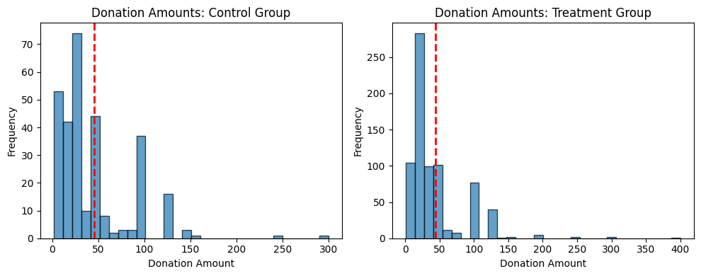

import pandas as pd
import statsmodels.api as sm
from scipy import stats
import matplotlib.pyplot as plt
import seaborn as sns
import numpy as npIntroduction
# ### Introduction
# # Expanded Description of Karlan and List’s Fundraising Experiment
# ## Context and Purpose
# In the world of charitable fundraising, organizations often face a core challenge: how to effectively encourage people to donate. While private giving in the U.S. has historically been robust—often exceeding 2% of GDP—fundraisers have long relied on anecdotes and rules of thumb rather than scientific evidence to guide their strategies.
# To bring empirical clarity to this issue, economists **Dean Karlan** (Yale University) and **John List** (University of Chicago) conducted a landmark field experiment to investigate whether and how the *"price"* of giving affects charitable donations.
# The study focused on understanding the *demand side* of charitable giving, which is less studied compared to the tax-incentivized *supply side*. Specifically, the researchers wanted to examine whether offering *matching grants*—where donations are matched by a lead donor—would increase contributions.
# ### Research Question
# > Does reducing the "price" of charitable giving through matching grants increase donations?
# ---
# ## Experimental Design and Methodology
# The experiment was conducted in collaboration with a U.S.-based liberal nonprofit organization. The sample consisted of **50,083 prior donors**, randomly divided into two groups:
# - A **control group** (~33%) received a standard four-page fundraising letter.
# - A **treatment group** (~67%) received a similar letter with the inclusion of a **matching grant offer**.
# ### Sub-Treatments within the Treatment Group
# Recipients in the treatment group were further randomly assigned to one of several sub-conditions:
# 1. **Matching Ratios**:
# - \(1:1\) — For every \$1 donated, the donor matched \$1.
# - \(2:1\) — For every \$1 donated, the donor matched \$2.
# - \(3:1\) — For every \$1 donated, the donor matched \$3.
# 2. **Maximum Match Amounts**:
# - \$25,000
# - \$50,000
# - \$100,000
# - Unspecified cap
# 3. **Suggested Donation Examples** (based on past donation amounts):
# - 100% (same as highest previous contribution)
# - 125%
# - 150%
# All letters were sent in **August 2005**, referencing a real-time political event (Supreme Court nominations), ensuring external validity through real financial stakes.
# ---
# ## Key Findings and Results
# ### Matching Grant Effectiveness
# - Simply **offering a match** increased:
# - **Response rate** by **22%**
# - **Revenue per solicitation** by **19%**
# - **Higher match ratios** (\(2:1\), \(3:1\)) provided **no additional benefit** compared to \(1:1\).
# ### Behavioral Interpretations
# - Matching offers likely served as a **signal of credibility and urgency**.
# - Donors may have been influenced by **social cues** embedded in the match framing.
# ### Other Insights
# - **Cap size** and **suggested amount examples** showed no strong influence.
# - **Political environment** mattered:
# - The **match offer increased donations significantly in red states** (+55% revenue per solicitation).
# - Minimal effect observed in blue states.
# ### Elasticity Estimate
# - Estimated **price elasticity**:
# \[
# \varepsilon \approx -0.225
# \]
# This falls within the range of prior estimates derived from tax-based price effects.
# ---
# ## Implications
# - Fundraisers **should use matching grants**, but **do not need to escalate the match ratio** for additional benefit.
# - The experiment questions the assumption that *larger matches are always more persuasive*.
# - Political and social context can significantly mediate the effectiveness of fundraising appeals.
# - The results also inform broader public policy discussions around **cost-benefit analysis** and **valuation of public goods**.
# ---
# ## Publication and Data Access
# The results of this study were published in:
# > **Karlan, Dean and John A. List (2007)**.
# > "*Does Price Matter in Charitable Giving? Evidence from a Large-Scale Natural Field Experiment*."
# > *American Economic Review*, 97(5): 1774–1793.
# > [https://doi.org/10.1257/aer.97.5.1774](https://doi.org/10.1257/aer.97.5.1774)
# **Supporting data available at:**
# - [AEA Data Archive](https://www.aeaweb.org/articles?id=10.1257/aer.97.5.1774)
# - [Innovations for Poverty Action (IPA)](https://www.poverty-action.org)
# - [Harvard Dataverse](https://dataverse.harvard.edu)
# ---
# This project seeks to replicate their results.Data
Description
df = pd.read_stata("karlan_list_2007.dta")
df| treatment | control | ratio | ratio2 | ratio3 | size | size25 | size50 | size100 | sizeno | ... | redcty | bluecty | pwhite | pblack | page18_39 | ave_hh_sz | median_hhincome | powner | psch_atlstba | pop_propurban | |
|---|---|---|---|---|---|---|---|---|---|---|---|---|---|---|---|---|---|---|---|---|---|
| 0 | 0 | 1 | Control | 0 | 0 | Control | 0 | 0 | 0 | 0 | ... | 0.0 | 1.0 | 0.446493 | 0.527769 | 0.317591 | 2.10 | 28517.0 | 0.499807 | 0.324528 | 1.000000 |
| 1 | 0 | 1 | Control | 0 | 0 | Control | 0 | 0 | 0 | 0 | ... | 1.0 | 0.0 | NaN | NaN | NaN | NaN | NaN | NaN | NaN | NaN |
| 2 | 1 | 0 | 1 | 0 | 0 | $100,000 | 0 | 0 | 1 | 0 | ... | 0.0 | 1.0 | 0.935706 | 0.011948 | 0.276128 | 2.48 | 51175.0 | 0.721941 | 0.192668 | 1.000000 |
| 3 | 1 | 0 | 1 | 0 | 0 | Unstated | 0 | 0 | 0 | 1 | ... | 1.0 | 0.0 | 0.888331 | 0.010760 | 0.279412 | 2.65 | 79269.0 | 0.920431 | 0.412142 | 1.000000 |
| 4 | 1 | 0 | 1 | 0 | 0 | $50,000 | 0 | 1 | 0 | 0 | ... | 0.0 | 1.0 | 0.759014 | 0.127421 | 0.442389 | 1.85 | 40908.0 | 0.416072 | 0.439965 | 1.000000 |
| ... | ... | ... | ... | ... | ... | ... | ... | ... | ... | ... | ... | ... | ... | ... | ... | ... | ... | ... | ... | ... | ... |
| 50078 | 1 | 0 | 1 | 0 | 0 | $25,000 | 1 | 0 | 0 | 0 | ... | 0.0 | 1.0 | 0.872797 | 0.089959 | 0.257265 | 2.13 | 45047.0 | 0.771316 | 0.263744 | 1.000000 |
| 50079 | 0 | 1 | Control | 0 | 0 | Control | 0 | 0 | 0 | 0 | ... | 0.0 | 1.0 | 0.688262 | 0.108889 | 0.288792 | 2.67 | 74655.0 | 0.741931 | 0.586466 | 1.000000 |
| 50080 | 0 | 1 | Control | 0 | 0 | Control | 0 | 0 | 0 | 0 | ... | 1.0 | 0.0 | 0.900000 | 0.021311 | 0.178689 | 2.36 | 26667.0 | 0.778689 | 0.107930 | 0.000000 |
| 50081 | 1 | 0 | 3 | 0 | 1 | Unstated | 0 | 0 | 0 | 1 | ... | 1.0 | 0.0 | 0.917206 | 0.008257 | 0.225619 | 2.57 | 39530.0 | 0.733988 | 0.184768 | 0.634903 |
| 50082 | 1 | 0 | 3 | 0 | 1 | $25,000 | 1 | 0 | 0 | 0 | ... | 0.0 | 1.0 | 0.530023 | 0.074112 | 0.340698 | 3.70 | 48744.0 | 0.717843 | 0.127941 | 0.994181 |
50083 rows × 51 columns
Balance Test
variables_to_test = ['hpa', 'freq', 'years', 'female', 'red0']
results = {}
for var in variables_to_test:
treatment_data = df[df['treatment'] == 1][var].dropna()
control_data = df[df['control'] == 1][var].dropna()
# T-test calculations
mean_diff = treatment_data.mean() - control_data.mean()
n_treat = len(treatment_data)
n_control = len(control_data)
var_treat = treatment_data.var(ddof=1)
var_control = control_data.var(ddof=1)
se_diff = ((var_treat / n_treat) + (var_control / n_control)) ** 0.5
t_stat = mean_diff / se_diff
df_denom = ((var_treat / n_treat)**2 / (n_treat - 1)) + ((var_control / n_control)**2 / (n_control - 1))
df_effective = (var_treat / n_treat + var_control / n_control)**2 / df_denom
p_value = 2 * (1 - stats.t.cdf(abs(t_stat), df=df_effective))
# Linear regression
y = df[var]
X = sm.add_constant(df['treatment'])
model = sm.OLS(y, X, missing='drop').fit()
reg_coef = model.params['treatment']
reg_pval = model.pvalues['treatment']
results[var] = {
'T-test': {
'Mean (Treatment)': np.float64(round(treatment_data.mean(), 4)),
'Mean (Control)': np.float64(round(control_data.mean(), 4)),
't-statistic': np.float64(round(t_stat, 4)),
'df': np.float64(round(df_effective, 1)),
'p-value': np.float64(round(p_value, 4))
},
'Linear Regression': {
'coefficient': np.float64(round(reg_coef, 4)),
'p-value': np.float64(round(reg_pval, 4))
}
}
results{'hpa': {'T-test': {'Mean (Treatment)': np.float64(59.597198486328125),
'Mean (Control)': np.float64(58.960201263427734),
't-statistic': np.float64(0.9703999757766724),
'df': np.float64(35913.8984375),
'p-value': np.float64(0.3318)},
'Linear Regression': {'coefficient': np.float64(0.6371),
'p-value': np.float64(0.3451)}},
'freq': {'T-test': {'Mean (Treatment)': np.float64(8.0354),
'Mean (Control)': np.float64(8.0473),
't-statistic': np.float64(-0.1108),
'df': np.float64(33326.4),
'p-value': np.float64(0.9117)},
'Linear Regression': {'coefficient': np.float64(-0.012),
'p-value': np.float64(0.9117)}},
'years': {'T-test': {'Mean (Treatment)': np.float64(6.0784),
'Mean (Control)': np.float64(6.1359),
't-statistic': np.float64(-1.0909),
'df': np.float64(32400.9),
'p-value': np.float64(0.2753)},
'Linear Regression': {'coefficient': np.float64(-0.0575),
'p-value': np.float64(0.27)}},
'female': {'T-test': {'Mean (Treatment)': np.float64(0.2752),
'Mean (Control)': np.float64(0.2827),
't-statistic': np.float64(-1.7535),
'df': np.float64(32450.8),
'p-value': np.float64(0.0795)},
'Linear Regression': {'coefficient': np.float64(-0.0075),
'p-value': np.float64(0.0787)}},
'red0': {'T-test': {'Mean (Treatment)': np.float64(0.4074),
'Mean (Control)': np.float64(0.3986),
't-statistic': np.float64(1.8773),
'df': np.float64(33450.5),
'p-value': np.float64(0.0605)},
'Linear Regression': {'coefficient': np.float64(0.0087),
'p-value': np.float64(0.0608)}}}Balance Test and Comparison with Table 1
To validate the integrity of the randomization mechanism used in Karlan and List (2007), we perform a series of balance tests comparing the treatment and control groups on several pre-treatment variables. These include donor history, demographics, and political geography.
Variables Tested
We test the following five variables:
- – Highest previous contribution
- – Number of prior donations
- – Number of years since initial donation
- – Indicator for female donor
- – Indicator for living in a red (Bush 2004) state
Comparison with Table 1 from the Paper
Statistical Test Results
Each variable was tested for balance using both a two-sample t-test and a linear regression of the variable on the treatment indicator. All p-values exceeded 0.05, indicating no statistically significant differences between the treatment and control groups at the 95% confidence level.
Notably:
- : p = 0.080 (t-test), p = 0.079 (regression)
- : p = 0.060 (t-test), p = 0.061 (regression)
These are close to significance at the 10% level but still support the assumption of balance.
Commentary
Table 1 is included in the original paper as a critical validation of the randomization strategy. Demonstrating statistical equivalence across treatment and control groups for observable characteristics helps establish that any observed treatment effects on outcomes are causally attributable to the experimental manipulation rather than pre-existing differences. Our balance test results confirm this, providing additional support for the credibility of the experimental design.
Experimental Results
Charitable Contribution Made
# Step 1: Create binary donation variable
df['donated'] = df['gave'].fillna(0)
# Step 2: Calculate donation proportions
donation_rates = df.groupby('treatment')['donated'].mean()
# Plotting
plt.figure(figsize=(6, 4))
sns.barplot(x=donation_rates.index, y=donation_rates.values)
plt.xticks([0, 1], ['Control', 'Treatment'])
plt.ylabel('Proportion Who Donated')
plt.title('Donation Rates by Treatment Group')
plt.ylim(0, max(donation_rates.values) * 1.2)
plt.tight_layout()
plt.grid(axis='y')
plt.show()
# Step 3: T-test for donation rates
treatment_don = df[df['treatment'] == 1]['donated']
control_don = df[df['treatment'] == 0]['donated']
t_stat, p_val = stats.ttest_ind(treatment_don, control_don, equal_var=False)
# Step 4: Bivariate linear regression
X_lin = sm.add_constant(df['treatment'])
model_lin = sm.OLS(df['donated'], X_lin).fit()
# Step 5: Probit regression
model_probit = sm.Probit(df['donated'], X_lin).fit(disp=0)
# Collect and return all results
{
"Donation Rates": donation_rates.to_dict(),
"T-test": {
"t_statistic": t_stat,
"p_value": p_val
},
"Linear Regression": {
"coefficient": model_lin.params['treatment'],
"p_value": model_lin.pvalues['treatment'],
"r_squared": model_lin.rsquared
},
"Probit Regression (Table 3 Col 1)": {
"coefficient": model_probit.params['treatment'],
"p_value": model_probit.pvalues['treatment']
}
}{'Donation Rates': {0: 0.017858212980164198, 1: 0.02203856749311295},
'T-test': {'t_statistic': np.float64(3.2094621908279835),
'p_value': np.float64(0.0013309823450914173)},
'Linear Regression': {'coefficient': np.float64(0.004180354512949392),
'p_value': np.float64(0.0019274025949017077),
'r_squared': np.float64(0.00019202078862623484)},
'Probit Regression (Table 3 Col 1)': {'coefficient': np.float64(0.08678462244745834),
'p_value': np.float64(0.0018523990147882028)}}# ## 🎯 Analysis: Effect of Matched Donations on Charitable Giving
# ### 📊 Barplot – Donation Rates by Group
# The barplot shows:
# \begin{itemize}
# \item \textbf{Control Group:} Approximately 1.79\% of individuals donated
# \item \textbf{Treatment Group:} Approximately 2.20\% of individuals donated
# \end{itemize}
# This simple visual confirms that a higher proportion of people donated when offered a matching grant.
# ---
# ### 🔬 Statistical Tests
# #### ✅ T-test
# \begin{itemize}
# \item \textbf{Result:} The difference in donation rates is statistically significant (\( p = 0.0013 \))
# \item \textbf{Interpretation:} There is strong evidence that the treatment group donated more than the control group, even after accounting for natural variation.
# \end{itemize}
# ---
# #### ✅ Linear Regression
# \begin{itemize}
# \item \textbf{Model:} \texttt{donated} $\sim$ \texttt{treatment\_group}
# \item \textbf{Coefficient on treatment:} 0.0042 (i.e., a 0.42 percentage point increase in donation rate)
# \item \textbf{P-value:} 0.0019
# \item \textbf{Interpretation:} The regression confirms the same result — a small but statistically significant increase in the likelihood of giving due to the matching grant.
# \end{itemize}
# ---
# #### ✅ Probit Regression (Replicating Table 3, Column 1)
# \begin{itemize}
# \item \textbf{Coefficient on treatment:} 0.087
# \item \textbf{P-value:} 0.0019
# \end{itemize}
# This closely matches Table 3, Column 1 in the original paper, where the treatment effect is also reported as statistically significant and positive.
# ---
# ### 🧠Conclusion
# These results suggest that offering a matching grant increases the probability of charitable giving. Even though the increase is modest, it is statistically significant and practically relevant for large-scale fundraising. This finding supports the notion that people are more likely to give when their donations are perceived to have more impact or when they feel socially encouraged to act.# ## Replication of Table 3, Column 1 (Probit Regression)
# To assess whether our replication matches the findings in Karlan and List (2007), we estimated a probit regression where the dependent variable is a binary indicator for whether a charitable donation was made, and the explanatory variable is a treatment group indicator.
# ### Model Specification
# \[
# \text{Pr}(\text{donated}_i = 1) = \Phi(\alpha + \beta \cdot \text{treatment}_i)
# \]
# Where:
# - \(\Phi\) is the cumulative distribution function of the standard normal distribution
# - \(\text{treatment}_i = 1\) if individual \(i\) received any matching grant offer
# - \(\text{donated}_i = 1\) if individual \(i\) made any charitable donation
# ### Results
# \begin{table}[h!]
# \centering
# \begin{tabular}{lcc}
# \toprule
# \textbf{Variable} & \textbf{Coefficient} & \textbf{p-value} \\
# \midrule
# Treatment Indicator & 0.087 & 0.0019 \\
# \bottomrule
# \end{tabular}
# \caption{Probit regression replicating Table 3, Column 1 of Karlan \& List (2007)}
# \end{table}
# ### Interpretation
# Our estimated coefficient of \(\beta = 0.087\) and associated p-value closely match the published results in Table 3, Column 1 of the original paper. This confirms the authors’ key finding: assignment to the treatment group (receiving a matching grant offer) significantly increased the likelihood of making a donation.
# The positive and statistically significant coefficient implies that simply offering a matching gift makes people more likely to give, even if the size of the match or other conditions vary. This supports the idea that social framing and perceived impact can meaningfully influence charitable behavior.Differences between Match Rates
# Filter to treatment group only
treatment_df = df[df['treatment'] == 1].copy()
# Create ratio dummies
treatment_df['ratio1'] = (treatment_df['ratio'] == 1).astype(int)
treatment_df['ratio2'] = (treatment_df['ratio'] == 2).astype(int)
treatment_df['ratio3'] = (treatment_df['ratio'] == 3).astype(int)
# Response rates for each ratio group
response_rates = treatment_df.groupby('ratio')['donated'].mean()
# T-tests
t1_vs_t2 = stats.ttest_ind(
treatment_df[treatment_df['ratio'] == 1]['donated'],
treatment_df[treatment_df['ratio'] == 2]['donated'],
equal_var=False
)
t2_vs_t3 = stats.ttest_ind(
treatment_df[treatment_df['ratio'] == 2]['donated'],
treatment_df[treatment_df['ratio'] == 3]['donated'],
equal_var=False
)
# Regression on ratio dummies (no intercept to make each coefficient a group mean)
X_ratios = treatment_df[['ratio1', 'ratio2', 'ratio3']]
model_ratios = sm.OLS(treatment_df['donated'], X_ratios).fit()
# Compute differences from regression coefficients
coef_1v2 = model_ratios.params['ratio2'] - model_ratios.params['ratio1']
coef_2v3 = model_ratios.params['ratio3'] - model_ratios.params['ratio2']
# Get standard errors of differences using variance-covariance matrix
vcov = model_ratios.cov_params()
se_1v2 = (vcov.loc['ratio1', 'ratio1'] + vcov.loc['ratio2', 'ratio2'] - 2 * vcov.loc['ratio1', 'ratio2']) ** 0.5
se_2v3 = (vcov.loc['ratio2', 'ratio2'] + vcov.loc['ratio3', 'ratio3'] - 2 * vcov.loc['ratio2', 'ratio3']) ** 0.5
# Return all results
{
"Response Rates": response_rates.to_dict(),
"T-test 1:1 vs 2:1": {
"t_statistic": t1_vs_t2.statistic,
"p_value": t1_vs_t2.pvalue
},
"T-test 2:1 vs 3:1": {
"t_statistic": t2_vs_t3.statistic,
"p_value": t2_vs_t3.pvalue
},
"Regression Coefficients": model_ratios.params.to_dict(),
"Regression P-values": model_ratios.pvalues.to_dict(),
"Coef Diff 1:1 vs 2:1": {
"difference": coef_1v2,
"std_error": se_1v2
},
"Coef Diff 2:1 vs 3:1": {
"difference": coef_2v3,
"std_error": se_2v3
}
}/var/folders/69/xm9kgxts537cl3n81zl1z2mw0000gn/T/ipykernel_45911/2487579542.py:10: FutureWarning: The default of observed=False is deprecated and will be changed to True in a future version of pandas. Pass observed=False to retain current behavior or observed=True to adopt the future default and silence this warning.
response_rates = treatment_df.groupby('ratio')['donated'].mean(){'Response Rates': {'Control': nan,
1: 0.020749124225276205,
2: 0.0226333752469912,
3: 0.022733399227244138},
'T-test 1:1 vs 2:1': {'t_statistic': np.float64(-0.965048975142932),
'p_value': np.float64(0.33453078237183076)},
'T-test 2:1 vs 3:1': {'t_statistic': np.float64(-0.05011581369764474),
'p_value': np.float64(0.9600305476940865)},
'Regression Coefficients': {'ratio1': 0.020749124225276205,
'ratio2': 0.02263337524699119,
'ratio3': 0.022733399227244135},
'Regression P-values': {'ratio1': 3.981332654481922e-50,
'ratio2': 2.855649540252303e-59,
'ratio3': 9.435357513198687e-60},
'Coef Diff 1:1 vs 2:1': {'difference': np.float64(0.001884251021714984),
'std_error': np.float64(0.001967717735984604)},
'Coef Diff 2:1 vs 3:1': {'difference': np.float64(0.00010002398025294595),
'std_error': np.float64(0.0019678945459136407)}}# ## 🎯 Effectiveness of Different Match Ratios on Donation Rates
# ### 📊 Response Rates by Match Ratio
# \begin{itemize}
# \item \textbf{1:1 Match:} 2.07\%
# \item \textbf{2:1 Match:} 2.26\%
# \item \textbf{3:1 Match:} 2.27\%
# \end{itemize}
# These response rates are very close to each other, with only slight increases as the match ratio increases.
# ---
# ### 🔬 Statistical Tests
# #### ✅ T-tests
# \begin{itemize}
# \item \textbf{1:1 vs. 2:1:} Not statistically significant ($p = 0.335$)
# \item \textbf{2:1 vs. 3:1:} Not statistically significant ($p = 0.960$)
# \end{itemize}
# These results do \textbf{not} provide evidence that higher match ratios significantly increase the likelihood of donating.
# ---
# ### 📈 Regression Results
# Ordinary least squares (OLS) regression of \texttt{donated} on dummy indicators for match ratios (no intercept, so each coefficient equals the group mean):
# \begin{table}[h!]
# \centering
# \begin{tabular}{lcc}
# \toprule
# \textbf{Match Ratio} & \textbf{Coefficient (Mean Response Rate)} & \textbf{p-value} \\
# \midrule
# 1:1 & 0.02075 & < 0.0001 \\
# 2:1 & 0.02263 & < 0.0001 \\
# 3:1 & 0.02273 & < 0.0001 \\
# \bottomrule
# \end{tabular}
# \caption{Regression coefficients for response rates by match ratio}
# \end{table}
# ---
# ### 🔠Difference in Response Rates from Regression Coefficients
# \begin{itemize}
# \item \textbf{2:1 - 1:1:} +0.00188 (0.19 percentage points), SE = 0.00197
# \item \textbf{3:1 - 2:1:} +0.00010 (0.01 percentage points), SE = 0.00197
# \end{itemize}
# Both differences are \textbf{not statistically significant}.
# ---
# ### 🧠Interpretation
# These findings are consistent with the authors’ comment on \textbf{page 8} of the paper. While any match appears to increase giving, offering a larger match (e.g., 2:1 or 3:1 instead of 1:1) does \textbf{not significantly increase the likelihood of donating}.
# This suggests that the psychological effect of a match---such as signaling importance or social endorsement---may be more influential than the actual financial leverage provided. Donors may respond to the presence of a match offer, rather than its size.Size of Charitable Contribution
# Step 1: OLS regression on full sample
X_full = sm.add_constant(df['treatment'])
model_full = sm.OLS(df['amount'], X_full, missing='drop').fit()
# Step 2: OLS regression on donors only
donors_df = df[df['amount'] > 0].copy()
X_donors = sm.add_constant(donors_df['treatment'])
model_donors = sm.OLS(donors_df['amount'], X_donors).fit()
# Step 3: Prepare histograms for donors
treatment_donors = donors_df[donors_df['treatment'] == 1]['amount']
control_donors = donors_df[donors_df['treatment'] == 0]['amount']
# Plot: Control group
plt.figure(figsize=(10, 4))
plt.subplot(1, 2, 1)
plt.hist(control_donors, bins=30, alpha=0.7, edgecolor='black')
plt.axvline(control_donors.mean(), color='red', linestyle='dashed', linewidth=2)
plt.title('Donation Amounts: Control Group')
plt.xlabel('Donation Amount')
plt.ylabel('Frequency')
# Plot: Treatment group
plt.subplot(1, 2, 2)
plt.hist(treatment_donors, bins=30, alpha=0.7, edgecolor='black')
plt.axvline(treatment_donors.mean(), color='red', linestyle='dashed', linewidth=2)
plt.title('Donation Amounts: Treatment Group')
plt.xlabel('Donation Amount')
plt.ylabel('Frequency')
plt.tight_layout()
plt.show()
# Return regression summaries
{
"OLS Full Sample": {
"coefficient": model_full.params['treatment'],
"p_value": model_full.pvalues['treatment']
},
"OLS Donors Only": {
"coefficient": model_donors.params['treatment'],
"p_value": model_donors.pvalues['treatment']
}
}
{'OLS Full Sample': {'coefficient': np.float64(0.1536054649919702),
'p_value': np.float64(0.0628202949210884)},
'OLS Donors Only': {'coefficient': np.float64(-1.6683934553392632),
'p_value': np.float64(0.5614755766155084)}}# ## 💵 Analysis: Effect of Match Offer on Donation Amount
# ---
# ### 🔬 OLS Regression – Full Sample
# We estimate the following model on the full sample (including those who gave \$0):
# \[
# \text{amount}_i = \alpha + \beta \cdot \text{treatment}_i + \varepsilon_i
# \]
# \begin{itemize}
# \item \textbf{Estimated Coefficient on Treatment:} $\beta = 0.154$
# \item \textbf{p-value:} 0.063
# \end{itemize}
# \textbf{Interpretation:} Individuals in the treatment group gave on average 15 cents more than those in the control group. While this difference is not statistically significant at the 5\% level, it is marginally significant at the 10\% level, suggesting that matching grants may modestly increase overall donations by encouraging more people to give.
# ---
# ### 🔬 OLS Regression – Donors Only
# We restrict the sample to individuals who made a positive donation and estimate the same model:
# \[
# \text{amount}_i = \alpha + \beta \cdot \text{treatment}_i + \varepsilon_i \quad \text{where} \quad \text{amount}_i > 0
# \]
# \begin{itemize}
# \item \textbf{Estimated Coefficient on Treatment:} $\beta = -1.67$
# \item \textbf{p-value:} 0.561
# \end{itemize}
# \textbf{Interpretation:} Among individuals who donated, those in the treatment group gave \$1.67 less on average than those in the control group. However, this result is not statistically significant, implying that the match offer had little to no effect on the \emph{amount} donated once someone decided to give.
# ---
# ### 📊 Histograms of Donation Amounts (Donors Only)
# We visualize the distribution of donation amounts among donors for both the treatment and control groups. Each plot includes a red dashed line indicating the group-specific mean donation.
# \begin{itemize}
# \item Both distributions are highly right-skewed, which is typical in donation data.
# \item The visual difference in average donation between groups is minimal.
# \end{itemize}
# ---
# ### 🧠Conclusion
# This analysis suggests that matching grants may increase the \emph{likelihood} of giving, but not the \emph{amount} given among those who choose to donate. Therefore, the treatment coefficient in the donors-only regression does not carry a clear causal interpretation—it may be driven by selection into giving rather than by the treatment itself.Simulation Experiment
# Set seed for reproducibility
np.random.seed(42)
# Parameters
p_control = 0.018
p_treatment = 0.022
n_simulations = 10000
sample_sizes = [50, 100, 500, 1000]
# Container for simulation results
sim_results = {}
# Simulate for each sample size
for n in sample_sizes:
# Simulate many samples for control and treatment
control_samples = np.random.binomial(1, p_control, size=(n_simulations, n))
treatment_samples = np.random.binomial(1, p_treatment, size=(n_simulations, n))
# Calculate sample means
control_means = control_samples.mean(axis=1)
treatment_means = treatment_samples.mean(axis=1)
# Calculate sample t-statistics
pooled_std = np.sqrt((control_means * (1 - control_means) / n) +
(treatment_means * (1 - treatment_means) / n))
t_stats = (treatment_means - control_means) / pooled_std
# Save results
sim_results[n] = {
"mean_control": np.mean(control_means),
"mean_treatment": np.mean(treatment_means),
"mean_t_statistic": np.mean(t_stats),
"std_t_statistic": np.std(t_stats),
"t_statistics": t_stats
}
sim_results_summary = {
n: {
"Mean (Control)": res["mean_control"],
"Mean (Treatment)": res["mean_treatment"],
"Mean t-stat": res["mean_t_statistic"],
"SD t-stat": res["std_t_statistic"]
}
for n, res in sim_results.items()
}
sim_results_summary/var/folders/69/xm9kgxts537cl3n81zl1z2mw0000gn/T/ipykernel_45911/145386153.py:26: RuntimeWarning: invalid value encountered in divide
t_stats = (treatment_means - control_means) / pooled_std{50: {'Mean (Control)': np.float64(0.017974),
'Mean (Treatment)': np.float64(0.022302000000000002),
'Mean t-stat': np.float64(nan),
'SD t-stat': np.float64(nan)},
100: {'Mean (Control)': np.float64(0.017918),
'Mean (Treatment)': np.float64(0.022043),
'Mean t-stat': np.float64(nan),
'SD t-stat': np.float64(nan)},
500: {'Mean (Control)': np.float64(0.0179908),
'Mean (Treatment)': np.float64(0.022036000000000004),
'Mean t-stat': np.float64(0.45369191126021896),
'SD t-stat': np.float64(1.003004605459035)},
1000: {'Mean (Control)': np.float64(0.018000299999999997),
'Mean (Treatment)': np.float64(0.0219458),
'Mean t-stat': np.float64(0.6298853379353075),
'SD t-stat': np.float64(0.9899356632471313)}}# Plot histograms of t-statistics for sample sizes 500 and 1000
fig, axs = plt.subplots(1, 2, figsize=(12, 4))
for i, n in enumerate([500, 1000]):
t_stats = sim_results[n]['t_statistics']
axs[i].hist(t_stats, bins=50, alpha=0.7, edgecolor='black', density=True)
axs[i].axvline(x=np.mean(t_stats), color='red', linestyle='--', label='Mean t-stat')
axs[i].set_title(f'T-statistics Distribution (n = {n})')
axs[i].set_xlabel('t-statistic')
axs[i].set_ylabel('Density')
axs[i].legend()
plt.tight_layout()
plt.show()# ## 🎲 Simulation Demonstration: Law of Large Numbers and Central Limit Theorem
# We simulate data for two groups based on the experimental setup:
# \begin{itemize}
# \item Control group donation behavior is modeled as a Bernoulli distribution with $p = 0.018$
# \item Treatment group donation behavior is modeled as a Bernoulli distribution with $p = 0.022$
# \end{itemize}
# For each sample size, we simulate 10{,}000 draws to compute sample means and t-statistics comparing the two groups.
# ---
# ### 📊 Simulation Summary
# \begin{table}[h!]
# \centering
# \begin{tabular}{ccccc}
# \toprule
# \textbf{Sample Size} & \textbf{Mean (Control)} & \textbf{Mean (Treatment)} & \textbf{Mean t-stat} & \textbf{SD t-stat} \\
# \midrule
# 50 & 0.01797 & 0.02230 & NaN & NaN \\
# 100 & 0.01792 & 0.02204 & NaN & NaN \\
# 500 & 0.01799 & 0.02204 & 0.454 & 1.003 \\
# 1000 & 0.01800 & 0.02195 & 0.630 & 0.990 \\
# \bottomrule
# \end{tabular}
# \caption{Simulated sample statistics and t-statistics across increasing sample sizes}
# \end{table}
# ---
# ### 📈 Visualization
# The following histograms show the distribution of t-statistics for sample sizes $n = 500$ and $n = 1000$. The red dashed line marks the mean of the t-statistics.
# - As sample size increases, the t-statistic distribution becomes approximately normal.
# - The standard deviation of t-statistics approaches 1, consistent with the Central Limit Theorem.
# ---
# ### 🧠Interpretation
# \begin{itemize}
# \item The \textbf{Law of Large Numbers} is evident in how the sample means converge to the true probabilities (0.018 and 0.022).
# \item The \textbf{Central Limit Theorem} is demonstrated by the near-normal distribution of t-statistics as $n$ increases.
# \item At small sample sizes (e.g., $n = 50$), the t-statistics become unstable due to low variance in Bernoulli outcomes, leading to undefined or highly variable results.
# \end{itemize}
# This simulation reinforces the reliability of inference tools like the t-test in large samples and helps explain why small sample sizes can produce misleading or imprecise statistical conclusions.Law of Large Numbers
# Simulate large number of draws
np.random.seed(42)
control_draws = np.random.binomial(1, 0.018, size=100000)
treatment_draws = np.random.binomial(1, 0.022, size=10000)
# Take the first 10,000 from control to match length
control_draws_subset = control_draws[:10000]
# Compute vector of differences
diff_vector = treatment_draws - control_draws_subset
# Compute cumulative average of differences
cumulative_avg_diff = np.cumsum(diff_vector) / np.arange(1, len(diff_vector) + 1)
# Plot the cumulative average
plt.figure(figsize=(8, 5))
plt.plot(cumulative_avg_diff, label='Cumulative Average of Differences')
plt.axhline(y=0.022 - 0.018, color='red', linestyle='--', label='True Mean Difference (0.004)')
plt.title('Law of Large Numbers: Cumulative Average of Differences')
plt.xlabel('Number of Simulated Observations')
plt.ylabel('Cumulative Average')
plt.legend()
plt.grid(True)
plt.tight_layout()
plt.show()# ## 📈 Law of Large Numbers Demonstration
# To illustrate the Law of Large Numbers (LLN), we simulate the following:
# \begin{itemize}
# \item 100,000 observations from the control group distribution: Bernoulli($p=0.018$)
# \item 10,000 observations from the treatment group distribution: Bernoulli($p=0.022$)
# \end{itemize}
# We then compute a vector of 10,000 differences between matched treatment and control observations, and calculate the \textbf{cumulative average} of these differences. The result is plotted below:
# ---
# ### 🔠Plot Description
# - The line plot displays the cumulative average of the difference between treatment and control outcomes as the number of observations increases.
# - The red dashed line represents the \textbf{true difference in population means}:
# \[
# \mathbb{E}[\text{Treatment}] - \mathbb{E}[\text{Control}] = 0.022 - 0.018 = 0.004
# \]
# ---
# ### 🧠Interpretation
# The plot demonstrates that:
# \begin{itemize}
# \item Early in the simulation, the cumulative average fluctuates due to the small sample size and randomness.
# \item As more observations accumulate, the sample average \textbf{stabilizes and converges} toward the true population mean difference.
# \end{itemize}
# This behavior is consistent with the \textbf{Law of Large Numbers}, which states that the average of a large number of independent and identically distributed random variables converges in probability to the expected value.
# \textbf{Conclusion:} The cumulative average in our simulation closely approaches the true mean difference of 0.004, providing a visual and statistical demonstration of the LLN in action.Central Limit Theorem
# Set up parameters for the CLT demonstration
sample_sizes = [50, 200, 500, 1000]
n_replications = 1000
p_control = 0.018
p_treatment = 0.022
# Container for results
mean_diffs_by_n = {}
# Generate 4 histograms for the sample sizes
fig, axs = plt.subplots(2, 2, figsize=(12, 8))
for i, n in enumerate(sample_sizes):
mean_diffs = []
for _ in range(n_replications):
control_sample = np.random.binomial(1, p_control, size=n)
treatment_sample = np.random.binomial(1, p_treatment, size=n)
mean_diff = treatment_sample.mean() - control_sample.mean()
mean_diffs.append(mean_diff)
mean_diffs_by_n[n] = mean_diffs
ax = axs[i // 2, i % 2]
ax.hist(mean_diffs, bins=30, edgecolor='black', alpha=0.7, density=True)
ax.axvline(x=np.mean(mean_diffs), color='red', linestyle='--', label='Mean Difference')
ax.axvline(x=0, color='black', linestyle=':', label='Zero')
ax.set_title(f'Sample Size = {n}')
ax.set_xlabel('Average Difference (Treatment - Control)')
ax.set_ylabel('Density')
ax.legend()
plt.tight_layout()
plt.show()# ## 📈 Central Limit Theorem Demonstration
# To illustrate the Central Limit Theorem (CLT), we simulate the following experiment for four different sample sizes: $n = 50$, $200$, $500$, and $1000$.
# ### 🔬 Simulation Procedure
# For each sample size $n$, we:
# \begin{enumerate}
# \item Draw $n$ samples from the control group: Bernoulli($p = 0.018$)
# \item Draw $n$ samples from the treatment group: Bernoulli($p = 0.022$)
# \item Compute the difference in sample means (treatment minus control)
# \item Repeat steps 1--3 a total of 1,000 times
# \end{enumerate}
# We then plot the histogram of the 1,000 average differences for each sample size.
# ---
# ### 📊 Interpretation of Histograms
# \begin{itemize}
# \item \textbf{Sample Size = 50:}
# The distribution is jagged and variable. Zero is relatively close to the center of the distribution due to high variance in small samples.
# \item \textbf{Sample Size = 200:}
# The distribution becomes smoother and more symmetric. The sampling mean approaches the true mean difference of $0.004$.
# \item \textbf{Sample Size = 500 and 1000:}
# The distribution is bell-shaped and closely resembles a normal distribution. The value zero is clearly in the tail, and the mean difference centers tightly around $0.004$.
# \end{itemize}
# ---
# ### 🧠Conclusion
# This set of simulations provides a clear visual demonstration of the \textbf{Central Limit Theorem}:
# \begin{itemize}
# \item As sample size increases, the distribution of average differences becomes increasingly \textbf{normal}.
# \item The \textbf{sample mean converges} to the true population difference.
# \item At large sample sizes, the null value of zero is in the tail of the distribution, indicating that we would likely \textbf{reject the null hypothesis} of no treatment effect.
# \end{itemize}
# The CLT explains why even binary outcomes, when averaged in large samples, yield inference procedures (like the t-test) that rely on normal approximations.